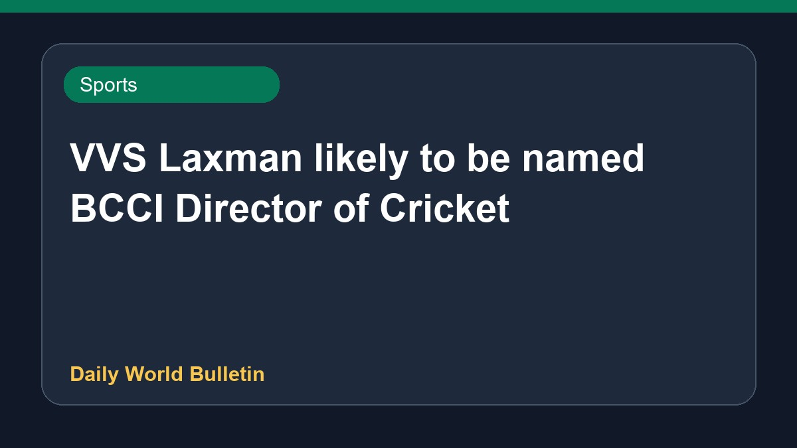

VVS Laxman likely to be named BCCI Director of Cricket

Reports indicate that VVS Laxman is set to take over as the BCCI Director of Cricket. This development comes amidst discussions regarding major organizational changes following recent team performances, including the series against England. Media reports highlight potential shifts in roles within the Indian cricket setup, impacting key figures like Gautam Gambhir and Ajit Agarkar. Further official announcements are awaited to confirm the exact nature of these appointments and the future roadmap for Indian cricket administration under the Board of Control for Cricket in India.
Original source: Sports News Sources
VVS Laxman likely to become BCCI Director of Cricket - India Today ↗
VVS Laxman likely to become BCCI Director of Cricket - India Today ↗